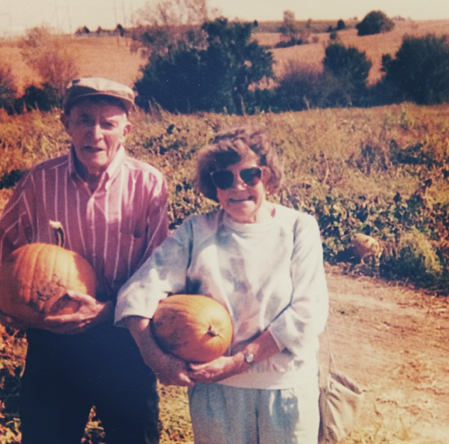

A guilty pleasure of mine is spending hours and hours looking at old family pictures. I could probably spend weeks going through old photo albums at my parents' house. My grandpa has always stressed the importance of taking pictures. Now, I feel like I understand why.